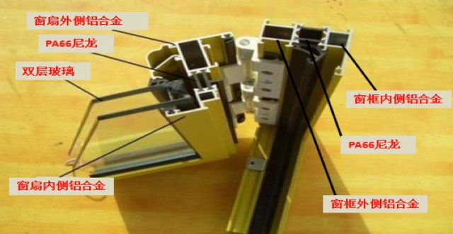

平开门窗还是推拉门窗？
平开门窗
优点：闭合式与窗框结合紧密
缺点：窗框固定，开启面积小，价格略微比推拉窗贵。
推拉门窗
优点：开启面积大，启闭灵活。
缺点：密闭性能不如平开窗，相应的保温、隔热、隔声就差一点。
型材要求：
铝合金、铝镁合金还是镁钛合金？
实际后两种也是铝合金的一个种类，市场上有些的合金中钛含量0.02%左右，镁含量是0.056%左右，主要成分是铝。按材料价格算每扇门镁钛合金占费用2元左右，对硬度有所增加，更多的是噱头，材料的决定性因素还是型材壁厚。
断桥铝还是非断桥铝？
断桥铝主要是在室内侧与室外侧的铝合金型材之间加了一层尼龙料，让金属导热快的弱点得以解决，让门窗具有更好的保温性能，更节能。
非断桥铝则是一根型材连接室内室外，在型材处形成内外热传导的桥梁，故门窗保温性能不佳，不节能。
保温隔热隔音是个系统，尤其在门窗扇与门窗框连接处及门窗扇之间的交界处的密封性能非常重要。如果这些接触面没有良好的密封性能，断桥节约那点能源远远不够这些地方透风带来的损失多，那就没必要做什么断桥了。所以做断桥门窗一定留意这些接口处密封处理，胶条能否压密实，那种只是简单交错在一起的门窗不管是断桥还是双层玻璃都意义不大。所以一般对于平开门窗用断桥效果要优于推拉门窗。
由上可以看出断桥铝连接内外侧型钢的尼龙料就非常重要了，直接影响耐久性、保温性等诸多性能，优良的尼龙是进口的PA66，略差的是国产PA66，无良的用PVC塑料替代，留意中间部分能看到PA66标志。
推拉窗断桥铝结构图

平开窗断桥铝结构图
外侧PA66尼龙条会有明显的激光打码，而且PA66与型材结合紧密无空隙，而PVC做不到这个精度。 还有一些方法可以区别PA66与PVC
1、看外观，PA66尼龙条表面平整光滑，颜色为黑色，两端有同步齿轮压出来的轮印。PVC条看起来表面不平整，颜色为灰黑色，从不同角度看去会有凹凸不平整的感觉。
2、点燃闻一下味道，PA66尼龙隔热条会散发一种烧羽毛的味道，而PVC条则会散发呛鼻子的气味，并伴随着黑烟。
3、PA66尼龙隔热条折一两次就会折断而且声音清脆，而PVC条则特别柔软，PVC条折几次就会发白，需要对折十多次才行，且断时无声音。 显然对于送到家里的门窗2与3都无法检测，1对普通消费者也难以对比，但有比较实用的办法，店里通过2与3进行检验，验证好的PA66尼龙条带走保留，在送门窗的时候现场与手里的样品进行对比，是能够看出明显差异的，但对于国产与进口PA66混用和外侧用PA66（看见面），内侧看不见的用PVC防不胜防，只能加工期间去看，至少厂家愿意接受中段去参观，才能确保没有偷工减料。
型材壁厚要求有哪些？
《铝合金门窗》规定，窗型材壁厚不低于1.4mm，门型材壁厚不应小于2mm。但市场上0.8-2.0mm都有。最差壁厚0.8，小方框那种，质量差，晃动的厉害，配套的五金件也容易损毁，但价格极低。而且实际上市场上用料也很多达不到国标标准。
型材真伪如何鉴别？
看断面颜色，铝型材分原生的和回收铝（再生铝），原生铝断面明亮银色，再生铝晦暗，注意是断面而非表面。
角码重要吗？
型材45切角后直角拼接材料就是角码，角码的好坏决定了型材连接的强度，所以角码应采用3mm及以上壁厚的铝合金角码，而非用PVC角码。